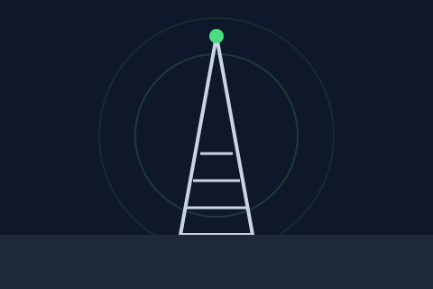
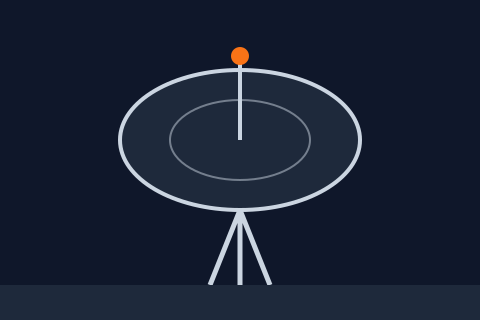

← The Archive
/
Day 3 — Ghost Images
/
Step 3 of 3: Contact Sheet
Recovered Cache

Radio tower glowing at night to signal that we are operating

Satellite tower to capture signal
Data servers as storage for our data